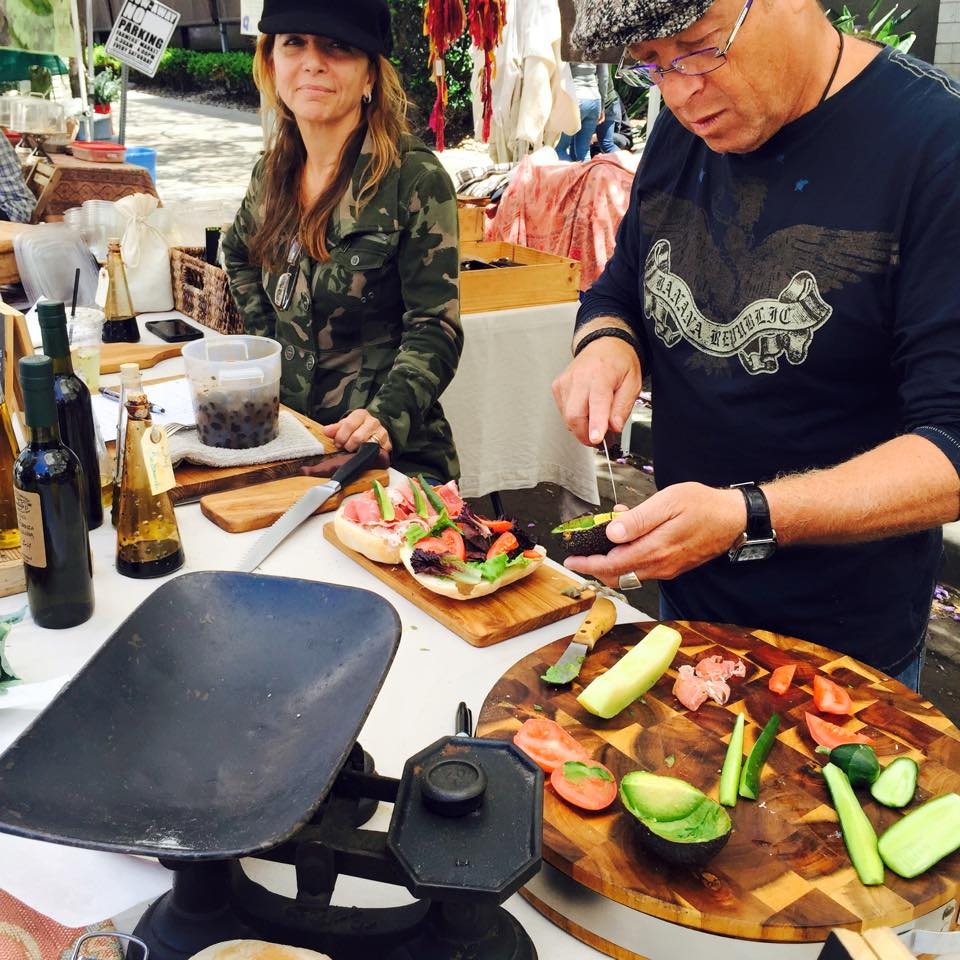
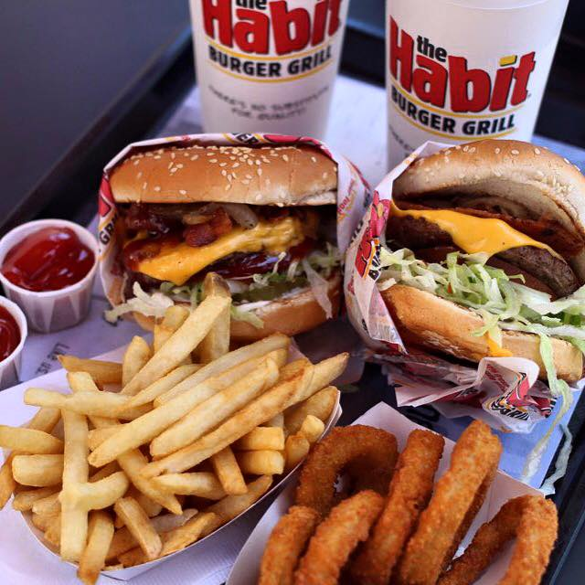
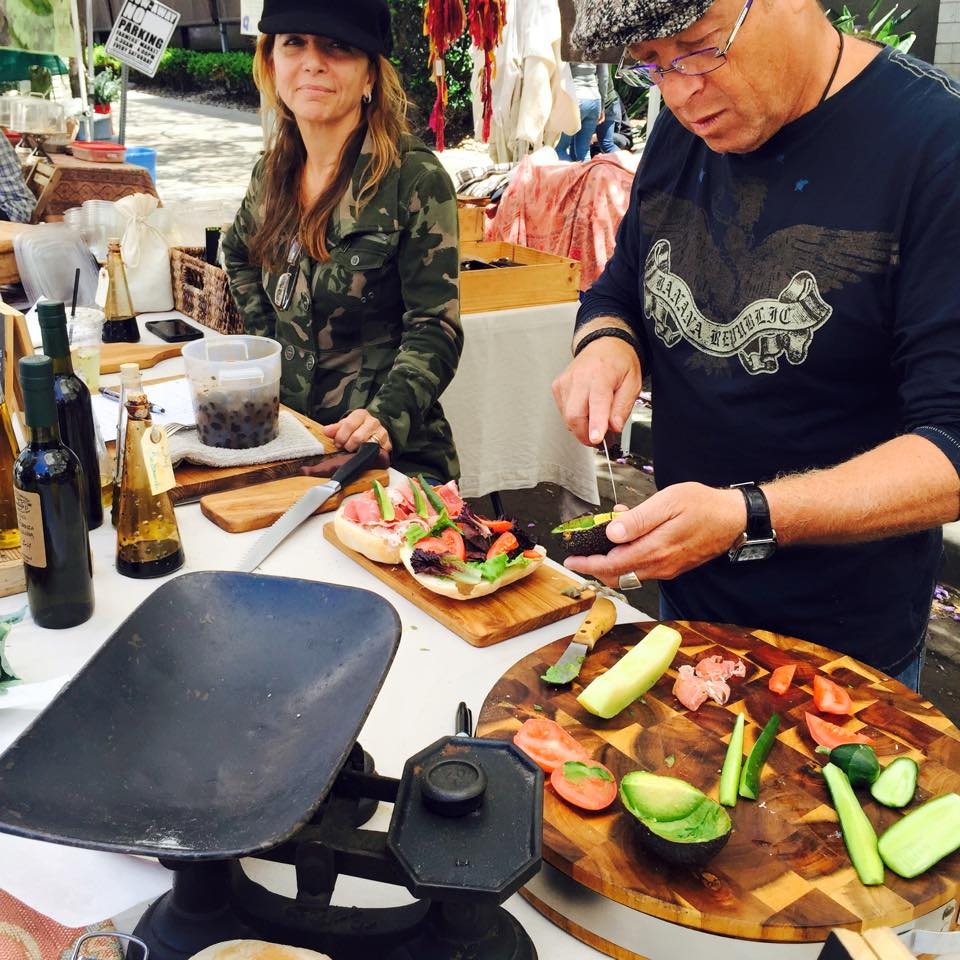
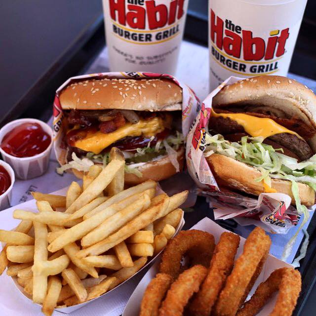
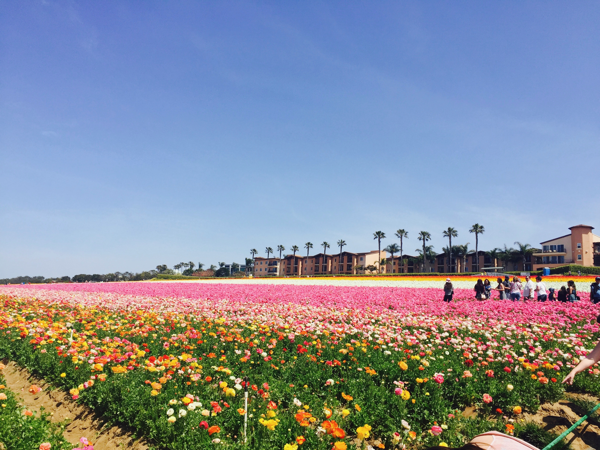
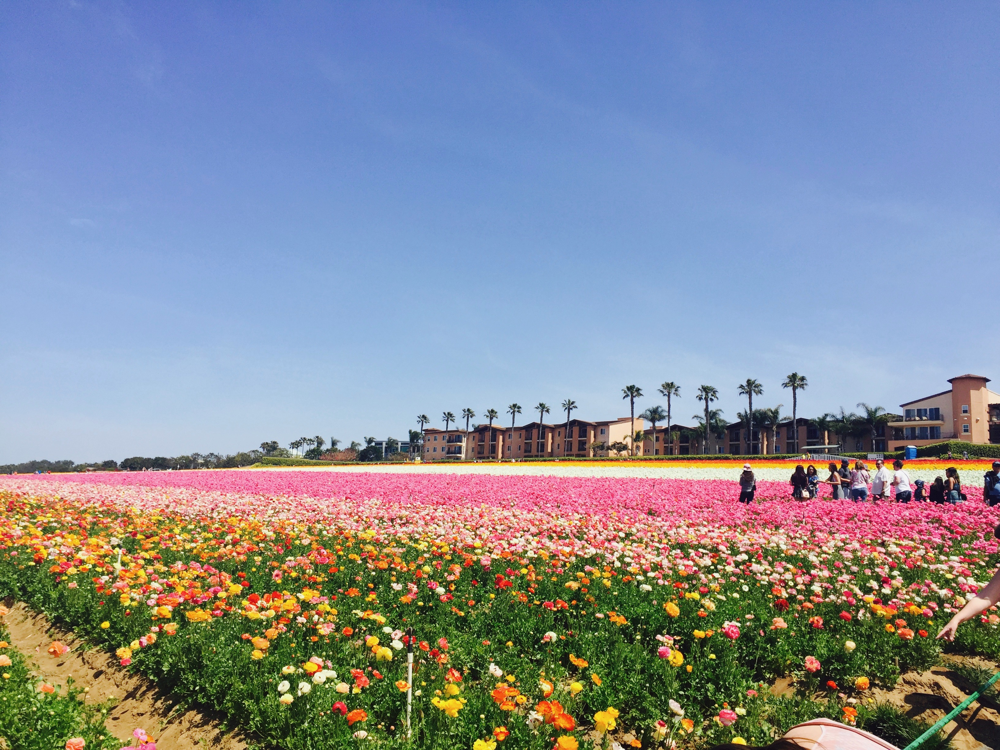
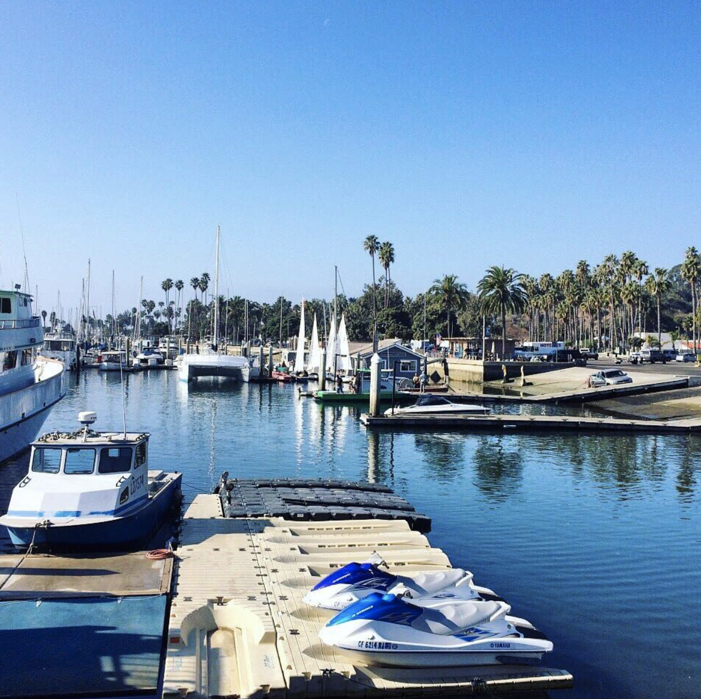
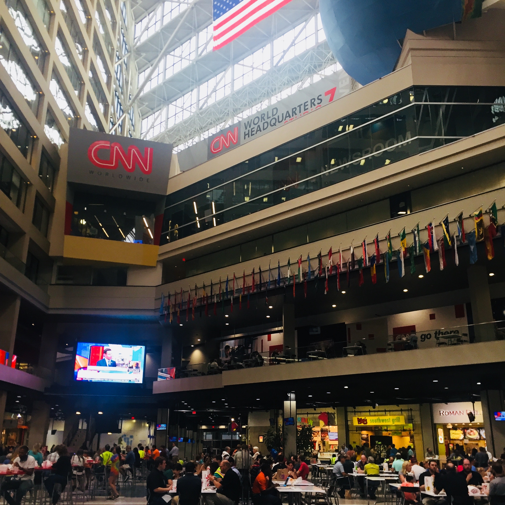
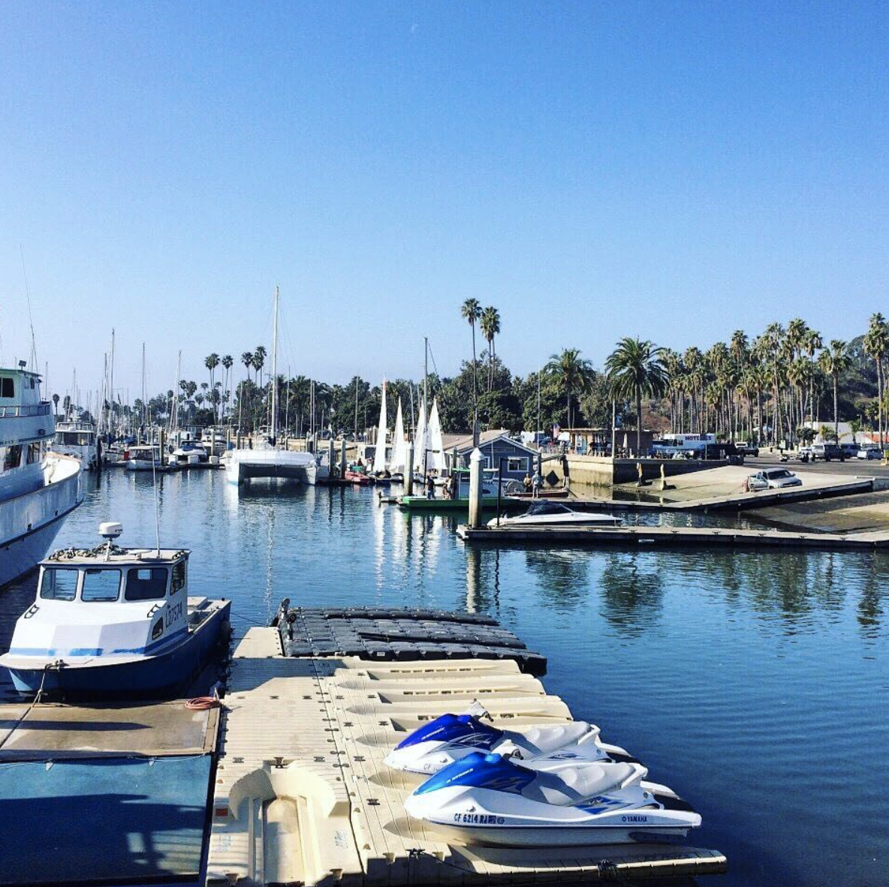
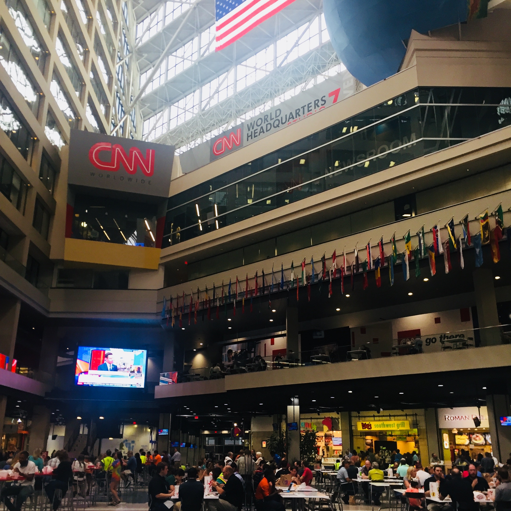

The last four years have been the most challenging yet most rewarding years of my life.
Next week, I will have started another journey and in just a few years, I will have become a more mature and generous person. In 2014 when I first came to the United States, everything was new - people, surroundings, music, and the language.. Although it was my decision and I really had hoped to come to the U.S. from a young age, dealing with uncertainty every day, every hour, every minute was not easy at all. But one thing was certain was that regardless of the days that I had spent crying, feeling nervous and even depressed - I was becoming a better person. While I was overcoming challenges, I have become more courageous, fearless, and the most important thing that I feel proud of; I found ‘myself’. I remember I pretended to be brave even though I am really not. I always wanted someone to be my side and was afraid of being alone. But now I am a totally different person. I learned the language, became close friends with diverse people around the world, and I am attending college studying what I want and enjoying every day. I even expect the challenge that I will face while I am living.
In the future, I want to hear more diverse voices and perspectives from people all around the world and share moments together. I want to feel the pleasure again which I felt while communicating with people and learning about new things in this mixed community. I lived in three different cities in just four years, and during the time adapting and immersing myself into new environment each and every year, I was fascinated by the diversity of people, cultures, languages and surprised by the fact that I also developed many diverse perspectives on people, cultures, and lives in just a short period of time.
I’ve always dreamed of the world connected through shared stories, beliefs, and languages. And I strongly believe our connected and exciting future lies just ahead of us. During the last four years, I had a big opportunity to experience a lot of things, and the influence of learning from the experience was a lot higher than I expected. One of the most inspiring things that I learned and developed while I am overcoming struggles and while I am living as a new visitor to new country is the ability to see, feel, think, and experience the changing world more deeply than many others. I see the world is changing rapidly, and I want to participate in the rapidly changing process and contribute whatever I can do. Specifically, I can’t keep my eyes off of the changing media industries as I think media takes a significant part of our lives. Media reflects our thinking, behavior, perspective, and life- and we reflect back all of those things. With the development of technology, I think we can make something great. By sharing stories, beliefs, and languages through embedded images and messages, I think we can make something better and also make the life better.
And I think we are fortunately already in a very good position - as participants in constantly connected communities, we can confidently expect our bright future.
Over the last decades, the rapid development of new media and communication technologies has brought a profound transformation in the way people communicate and share ideas and information. There have never been more ways to communicate and connect with one another, but as Thomson argues, new media is constantly creating "new forms of action and interaction and kinds of social relationship- forms that are different from the kind of face-to-face interaction which has prevailed for most of human history" (1995:81). We always feel a sense of belonging - we communicate across time and space, and new media helps us to access to a vast amount of information and news immediately and interactively. Having this opportunity and becoming an active participant in this flow of cultural communication is such a blessing.
Technology has been a vital factor in our lives. It allows us to not only communicate with people on a global scale and share memories, but also it permanently saves our memories, words, and history. In the future, our descendants will never feel difficult to find out what the world was like 30 years ago. They won't have to dig a hole to study our activities since our every activities will be stored on the database. And we now also don’t feel any difficulty finding a right information even there are tons of information.
In 1995, Nicholas Negroponte prophesied the emergence of the Daily Me. With the Daily Me, he suggested, we would not rely on local newspaper nor television networks, and personalization of the system of communication will allow us to “filter” what we want to read, see and hear. Now we are living in 2019, two decades on from Negroponte’s description of The Daily Me, and the imagination of personalization has already become reality. With the emergence of social media, we have seen a dramatic change in information/news consumption and there is so much information available now but it has been shaped by our own preference - Facebook, Google, and others invite us to customize our page, to subscribe to automated updates of favorite sections, and to have stories to a personal archive. According to Pew Research Center, social media has become the main source of news and about two third of U.S adults (68%) are getting news on social media. Realizing an increasing role of social media, news organizations are following Google and Facebook’s lead and they are developing personalized contents together to attract consumers. However, while the personalization seemed to solve an issue of managing information overload that many news organizations continued to grapple with, as Eli Pariser warned about the effect of personalization in his book The Filter Bubble, critics have pointed out the importance of realizing its impact on people and society. They argue that online algorithms used by search engines and social media networking platforms would decrease information diversity of public discourses. While the idea of personalization is to keep you engaged, Pariser (2011) suggests, in the long run, it could cause social fragmentation and incoherence and thereby it brings challenges to deliberative democracy.
In the past, when we lived in a broadcast society, we as consumers had not much control over the flow of information. There were no places we can raise our voices or share information, and our society was controlled by the power elites that only a few people decided what we would see and hear about the world. Our freedom to seek, receive, and impart information was limited and, sometimes, even restricted by those who try to establish national consciousness for hegemonic purposes and we had no choice but to believe them. However, when the internet emerged and became a mass medium, we were given more opportunities to have more control, access, and availability of information that the emergence of the internet was a revolution. Technological developments in the twentieth century have brought a big change in the manner of social domination and the rise of social media has changed how people interact with each other and get information. Now social media has a ubiquitous influence on our daily lives. Since the role of social media has reached an inflection point, news organizations also use social media platforms to reach their audience and the ability of social media to spread and exchange information rapidly increased engagement among news organizations, social media platforms, and audience. Ironically, however, there is a strong sense that the same condition is happening repeatedly, and we are not seeing more democratization of cultural power. As Pariser argues, new rising force is, in fact, limiting our freedom and playing an incredible amount of power to shape what people know and don’t know, just as much as, and in a lot of ways more than other elites and old media institutions ever did. Social media served as a bridge to meet people and create a community, but the more powerful role it was playing was invisibly affecting our lives. Although news organizations including the public have expected the benefits of personalization, recent studies regarding filter bubble remind us of the importance of realizing its potential danger and suggest us to think beyond its benefits.
The impact and consequence that filter bubble can cause are bigger than our expectation. It not only prevents us from exchanging diverse ideas, securing our fundamental rights but also it eliminates our opportunity to gain credible and trustworthy information. Despite the given possibility of direct democracy through personalized new media, we have faced a threat of manipulation of public opinion and a new form of hegemonic control. Living in the information society, we find ourselves bombarded with the explosive quantity of information. Whether or not we actively seek it, we are all affected by the increasing number of information and ideas, and we often ask, “why should I read the news that I don’t care about?”. And the electric delight we experience is quite unforgettable and thus- very addictive.
Personalization has affected our lives in various ways. It didn’t only bring bad results; it also positively impacted our lives that through the personalized space, we achieve things that were unimaginable in the past. We communicate with the new like-minded people, build a relationship, and create a vibrant virtual community. The sense of being always connected with people whom we like is quite fascinating. But we should remember that the emergence of a new chance can also mean the emergence of a new threat. Computer algorithms are significantly different from human and therefore the impact of it is not only uncontrollable but also enormous. If we fail to prevent a disruption in information flow, the technology will exert disruptive power on our democracy and our healthy public sphere.
YouTube is a melting pot of diverse culture. The easy access and expanded audience’s control not only opened the door for interactive communication, but it also contributed to the democratic idealization of equal access, expression, and representation that it now has over 1.8 billion users every month. The increasing audience engagement of YouTube resulted in the transformation of media consumption and distribution, and especially, the impact of YouTube was significant in journalism industry that new emerging forces decentralized and challenged the traditional forms of media power. YouTube is an interactive online public sphere. Steven Chen, Chad Hurley, and Jawed Karim created an entirely new cultural phenomenon in the world of media that we are witnessing a radical change in the nature of news and the increasingly blurred boundaries of journalism.
With the development of Web 2.0 and the social network, YouTube played a significant role in a changing society and brought a tremendous influence on the information dissemination process. By the time YouTube was innovated, getting information was much easier than before since internet access became increasingly ubiquitous and people were free from the hassles of watching live broadcasts, making recordings, or waiting through narrative exposition and commercial breaks. More and more people were engaged in virtual space, and technological affordances helped people to save the significant amount of time to find information as well as a community of shared interest. And the emergence of YouTube, which was created for the purpose of helping the audience to access to repository of diverse videos, helped them to find missed bits of reporting and allowed for archiving images that audience was not restricted to any spatial and temporal limitations that the asynchronous nature and ubiquitous availability was revolutionary. As new media have sought to improve upon the main inadequacies of the old media, the traditional dynamics of access and inequality around news and information were distinguished by the immediacy and interactivity of new media, and the ingrained habits of the audience seeking and engaging with news and information were changing accordingly.
YouTube soon became the cultural/informational repository enabling the immediate circulation of everyday activities and interactive communication of globally connected audience. The greater participation of audience meant a dramatic shift toward greater engagement with members of the profession as well as the other members of communities, and as time goes by, YouTube gained more popularity and more and more people were sharing the important events as well as their stories through the shared place of YouTube. The simplified process of posting and watching video accelerated the speed of interaction and diversified interactions, and audience were not only able to broadcast themselves and express their identity, but they also could hear diverse voices from all around the world that YouTube became a global public sphere. As a new emerging self-publishing platform, YouTube provided the audience a new way of interacting with others and the idea of a top-down culture, in which talking heads spoon-feed passive spectators about what is happening in the world was ending.
By increasing audience engagement, YouTube brought a radical change in the nature of news and increasingly blurred the boundaries of journalism. YouTube constantly stimulated audience engagement and expanded the role of the audience, and millions of the audience were experiencing a significant transition from a passive audience to active audience. The blurring distinction between professional and audience weakened the agenda-setting of large media outlet and increased the power of audience that news organizations were losing the dominant control of news and information flow. The availability of relatively inexpensive, easy-to-use technological gadgets encouraged the active participation of audience and it led to the emergence of citizen journalism which allowed an unprecedented level of audience participation. YouTube pursued equalization of opportunity and they continued to develop a democratic public sphere by supporting audience with the additional information sources, which audience could use as a reference before filming or posting stories, and these sources helped them to become a better reporter removing the boundaries of status and educational background.
The growing influence of audience demonstrated the reliability of citizen as a fully qualified journalist and YouTube, realizing the potential and increasing public attention, continued to put efforts to encourage their participation. After Google bought YouTube in 2006 for $1.65 billion, YouTube was able to maintain their status as a dominant platform and became more powerful that it was becoming part of everyday life. They continued to support citizen journalists developing structures, and their new implementation was really helpful that it accelerated the development of citizen journalism.
YouTube opened a new chapter in journalism industry and gave audience opportunities to express their identity and interact with others. With the cell-phone being a news gathering device, YouTube’s user-friendly interface encouraged audience not only to actively engage in the production and share their stories, but also to raise social issues happening around them. Audience want more than before, and the world is becoming more and more globalized that people are paying more attention to global issues. Youtube played a critical role in bringing audience in contact with the distant world and it will continue to impact on journalism industry and our lives.
I was born in 1995 and although I like writing, I didn’t have that much interest in readings until two years ago. While I was growing up, I gained information through television, computer, and social media rather than books and my concentration thus often started to drift after two or three pages. I regretted I didn’t read many books, but fortunately, from two years ago I started to read books and feel thankful that I could now immerse myself in a book or a lengthy article. I felt the pleasure of deep reading, and I hope many other people also realize the delight that reading provides.
But, I know what’s going on. For us, especially those who grew up with the technology, reading a long article is very difficult. We often do skimming. The deep reading has become a struggle. Thanks to the ubiquity of text on the internet, we may well be reading more today than 20 years ago, when television was the medium of choice. But, reading books and reading short sentences are certainly different kind of reading and behind it lies a different kind of thinking.
We have become mere decoders of information. Getting information has become way easier than before, but our ability to interpret text and make rich connections to the words has decreased more than ever before. If we keep losing this ability, I think that we will have to sacrifice something important - not only our connections to the words but also to the fact, event, and furthermore, we will lose deeper understanding of our culture.
It is true people are ever more mobile, and the development of technology and publishing industries develop a new way of consuming information. However, we should not lose our ability to interpret and understand the text. When our developed ability meets the developed representation of words and ideas, the pleasure we can feel will be doubled.
According to the Pew Research Center, the Latino population in the United States has reached nearly 58 million in 2016 and since 2000 its population has continuously evolved with changes in immigration, education, and other characteristics. The presence of Latino TV has also been increased, and the rising visibility of U.S Spanish-language television programming reveals increased interdependence and interconnectedness between nations. With the development of technology, globalization has brought a significant change in our lives that worldwide economic, political, cultural and social relations have not only faced unprecedented change but it also became increasingly mediated across time and space that the nations have become closer than ever before. Under the trend of globalization, media industries have also faced a great change that not only the contents and styles of media industry but also the culture within media industries was influenced by this global phenomenon. As one of the increasing populations in the U.S., Hispanics have been fueling U.S population growth, and Nielsen reports that the American consumer landscape is changing accordingly. The increasing population of Latino has had an impact not only on the demographics of the U.S. population but also on other aspects of U.S society that their influence is redefining America. As Juan Piñón states in Reglocalization and the Rise of the Network Cities Media System in Producing Telenovelas for Hemispheric Audience, however, a transnational Latino/a community is made through a particular articulation of identity that representation of Latino/a is confined to a commodified televised Latinidad.
U.S. corporations, with the establishment of small corporations in Latin America, not only could gain new possibilities but also could expand their influence while taking advantage of cultural difference, cheap labor, and infrastructure. However, behind such success of increasing Latino/a’s visibility in the U.S and generating market profits lies a significant issue that challenges the market logic of the media industry. The failure of portraying the cultural complexity of Latinos, which resulted as a result of marketization, raises a concern about incorporation and management of cultural differences that Piñón argues the integration of media corporations only fulfilled the logic of the market rather than citizen’s needs or rights. Although the Mexican American and Mexican population represent the majority of the Latino population, many other cultural roots such as Puerto Ricans, Cubans, Colombians, and Peruvians- also contribute to the identity of Latindad Moreover, although the dominant language is Spanish, most growing young Latinos do not think of importance of speaking Spanish and still consider themselves as Latino. Latino broadcasters and networks have sailed with the banner of Latino diversity, but it is, in fact, an illusion that U.S. corporate media created to represent them as a site of multiple pluralism and equality. Thus, before celebrating the market’s economic success and enjoying the representation of Latin American’s story, there needs to be an appropriate understanding of how the market industry works and what impact it can cause to the mass audience. In this age of globalization, the challenge is not only to recognize the blurred nature of mass-mediated representation, but also to recognize the demanded recognition, visibility, and inclusion of invisible members.
For a long time, I’ve dreamed of traveling the world and wanted to deliver the stories happening in the country. But as a young child, it seemed very difficult to achieve. I knew nothing and didn’t know if I can deliver stories that are interesting and worthy of attention. Nevertheless, I did not stop dreaming.
Thankfully, when I was in high school, social media emerged and it became increasingly popular. I was an active user of social media at that time, and although I was not traveling the world, I was happy that I found an easy way to share stories. When I came to the U.S. four years ago, I took many photos, videos, and shared on social media platform to tell my stories and the stories of people living around me to my precious family and friends. It was such a pleasure. Even though we were really far away, this innovative social media platforms allowed us to stay connected.
And as an audience, I was really fascinated by the fact that I could hear other’s voice and stories living in other countries. They shared their life stories, travel stories, and even reported news happening around them. 
Hearing other’s stories through their perspectives was a really different experience.Despite the fact that they are not professional, the stories they were telling us was really different from general reporting and I thought that the depth in stories was significantly improving the quality of contents. 
As technology continues to develop, I believe that there will be more ways to tell stories and deliver in more interesting, meaningful ways. More people will gain more opportunities to become an active reporter,
but still, professional journalists will be telling most of the important stories happening in local, world, and breaking news stories.I learned that most of the news organizations are employing various strategies to develop theirstorytelling skills. In 2015, The New York Times added a platform to their news production and output. By distributing more than one million cardboard virtual reality (VR) headsets to their subscribers, they started offering news stories through 360-degree filming. ABC News, CNN, USA Today, The Guardian, and other organizations have since launched 360-degree filming, and I think continuous development of this new technology will bring significant impact on the nature of news consumption and news ecology. It will contribute to more effective and empathetic storytelling, and we audience would be more involved with the stories and develop a deeper understanding of others.
Realizing our imagination is becoming reality is never boring. And while I am expecting a bright future of the journalism industry, my desire to become an influential person in the industry becomes stronger and stronger.

 




 

 
<


<
